Cách pha cà phê Capuchino – Latte art – Ngon đúng phong cách Ý
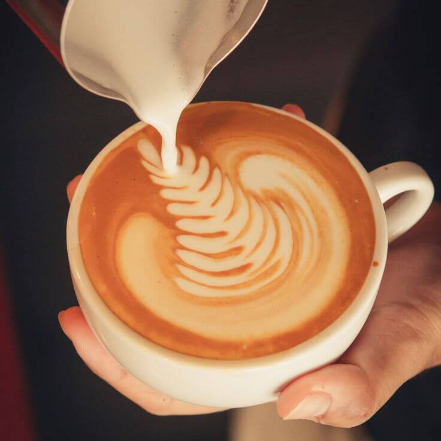Cafe cappuccino là một món cafe truyền thống của người Ý. Thật khó để xác định khoảng thời gian chính xác Latte Art được phát minh và thậm chí do ai phát minh ra cũng không rõ. Những người đam mê cà phê cho rằng David Schomer là người đầu tiên định nghĩa nó ở giữa thập niên 80. Trong khi đó, tại Ý, người đàn ông mang tên Lugi Lupi cũng làm điều tương tự trong khoảng thời gian tương tự.
Một điều chắc chắn là nếu bạn muốn có một kỹ thuật vẽ latte art xuất sắc thì bạn phải luyện tập rất nhiều. Nó cũng giống như bạn tập viết vậy, khi mới cầm cây bút thì bạn chỉ viết được những đường cong xiêu vẹo, vụng về, nhưng dần dần qua thời gian bạn sẽ làm được điều bạn muốn. Trong giới cà phê cũng có những tranh luận về việc dùng loại sữa nào và đánh bọt ra sao, nhưng theo tôi thì chỉ cần bọt ra mịn để bạn vẽ đẹp thì loại sữa đó sử dụng được. Thường thấy nhất là sữa full cream hoặc sữa thanh trùng, loại sữa mà chỉ có thời gian sử dụng trong 7 hoặc 10 ngày. Và bạn phải sử dụng sữa lạnh, nó cũng giúp bạn dễ tạo bọt.
Cách làm capuchino (cappuccino) cho mọi loại máy pha cafe espresso
Làm capuchino có vẻ đơn giản, nhưng rất khó để làm tốt. Điều quan trọng cần nhớ là có hai giai đoạn: nạp không khí – barista gọi là “stretching”, và làm sữa – barista gọi là “texturing”. Bạn cần cả hai để có thể làm dạng sữa bạn thích và tạo ra nghệ thuật cafe tuyệt vời.
Để nạp không khí vào sữa, bạn chỉ cần đặt đầu vòi đánh hơi vào sữa, sau đó bật cần, tạo ra vòng xoáy. Vòng xoáy sữa này sẽ bắt lấy không khí ở bề mặt và kết hợp nó vào sữa. Khi đã lấy đủ không khí, bạn đặt sâu vòi đánh sữa vào sữa để tiếp tục nhũ hóa nó. Đối với latte, bạn chỉ cần một ít bọt nên bạn sẽ nạp ít không khí, đối với cappuccino thì bạn cần nhiều bọt hơn.
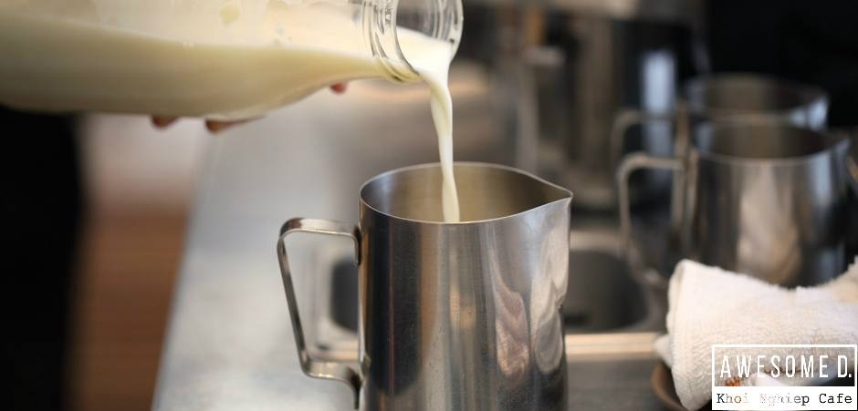 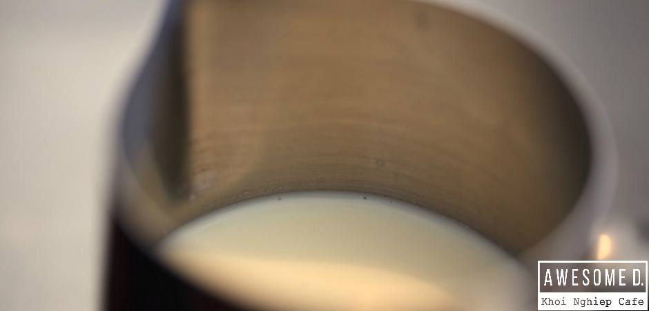Step 1 – Đổ sữa vào ca đánh sữa. Nếu bạn muốn sử dụng 300ml sữa thì dùng loại ca đánh sữa chứa được 400ml, còn nếu bạn muốn sử dụng 400ml sữa thì hãy dùng loại ca chứa được 600ml sữa. Luôn phải có khoảng trống để sữa tạo bọt, tốt nhất là lượng sữa chỉ ở mức một nửa như trong hình
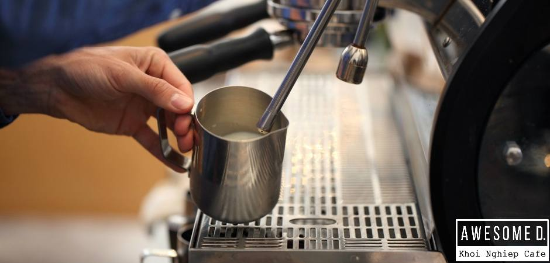 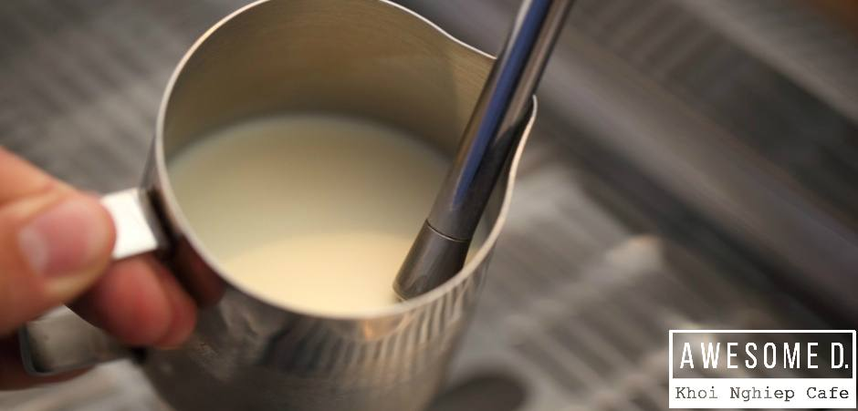Step 2 – Công việc khó khăn đầu tiên của bạn là tạo bọt sữa. Cầm ca đánh sữa theo hướng của vòi đánh sữa, hãy nhìn hình và bắt chước y chang. Yếu quyết của việc này là làm sao để sữa trong ca xoay tròn, còn hơi nước sẽ tự làm sữa bông lên.
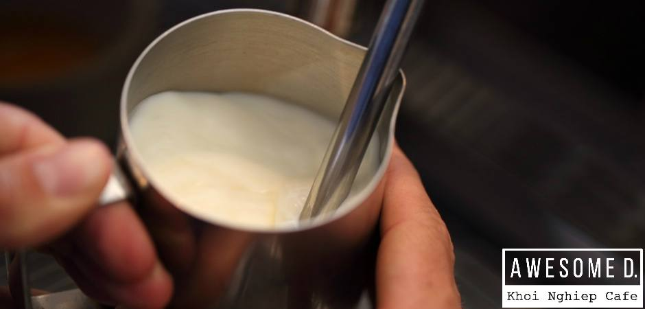 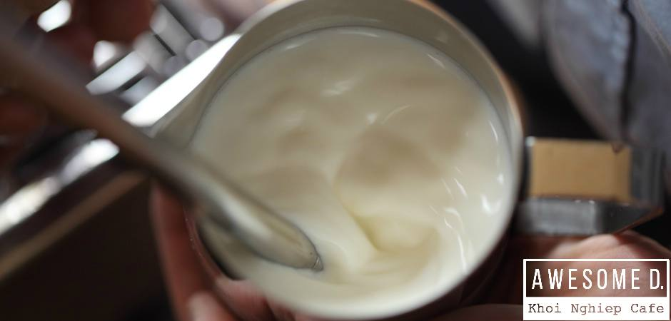Step 3 – Đã tới lúc bạn đưa ca đánh sữa lên và vặn nút để vòi đánh sữa hoạt động. Đừng sợ hãi mà buông tay ra, không có điều gì khủng khiếp cả. Để tạo được bọt tốt thì vòi đánh sữa không được chìm quá sâu mà chỉ được cách bề mặt một hoặc hai cm. Hãy nhớ, đặt vòi làm sao để sữa có thể xoay tròn trong ca, và chỉ nhúng vòi đánh sữa sâu 1-2cm. Trong lúc đánh sữa hãy dùng tay cảm nhận nhiệt độ của sữa, khi sữa đạt nhiệt độ 75-85 °C thì ta có thể dừng quá trình đánh sữa.
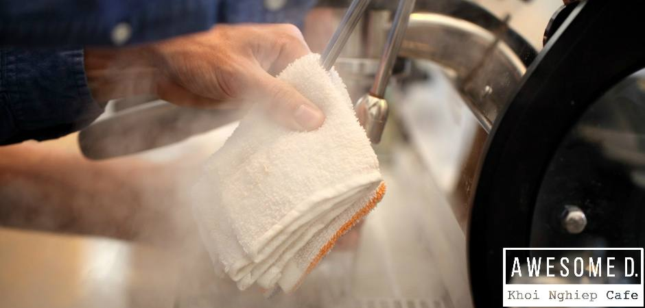Step 4 – Sau khi đánh sữa xong, ta xả một ít hơi nước vào khay thoát nước. Mục đích của việc này là làm sạch phần bên trong vòi. Sau đó dùng khăn ẩm sạch lau vòi đánh sữa cẩn thận. Nếu không có bước xả – lau này, sữa sẽ khô cứng lại trên vòi gây mất vệ sinh cho những đợt đánh sữa kế tiếp, và lâu ngày sẽ gây ra nghẹt vòi đánh sữa.
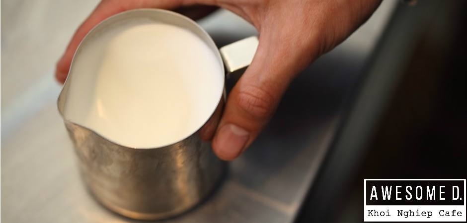Step 5 – Lúc ban đầu chỉ có nửa ca sữa, sau khi đánh sữa đã tạo thành một lớp bọt dày và mịn phía trên bề mặt. Đây chính là nguyên liệu để ta tạo hình. Gõ nhẹ và xoay tròn ca đánh sữa trên mặt bàn để bong bóng lớn bị bể, chỉ còn lại lớp bọt mịn
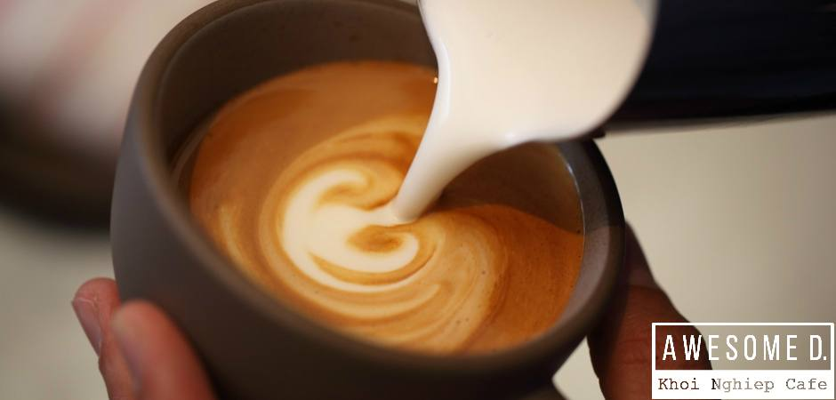Step 6 – Đổ sữa từ từ vào tách espresso, hãy cứng tay để dòng sữa luôn đều đặn, rồi sẽ tới lúc những bọt trắng nổi lên, tôi tin là bạn sẽ cảm nhận được. Khi đổ ra được dòng sữa trắng trên bề mặt rồi thì hãy từ từ điều khiển nó. Tập từ từ bạn sẽ thành thạo hơn. Hãy nhìn những em bé tập viết với những nét chữ xiêu vẹo. Nếu tập viết 200 lần có thể viết đẹp thì bạn cũng có thể tập vẽ latte art 200 lần ( tập bằng nước, tự tưởng tượng).
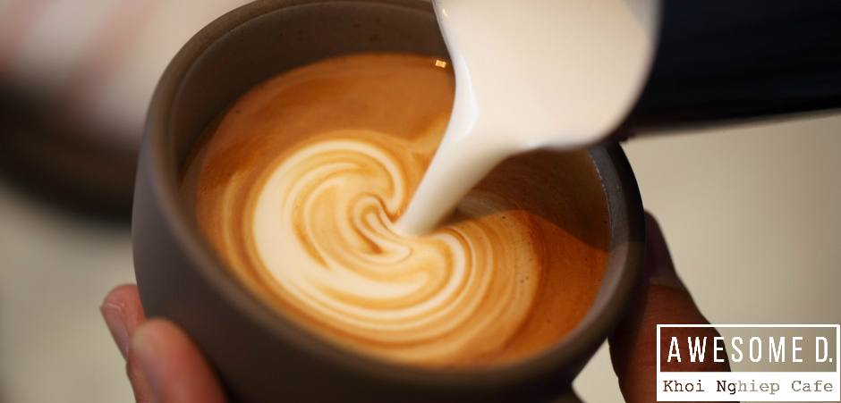 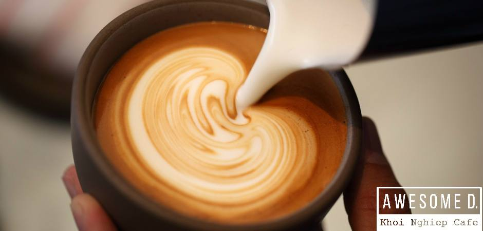 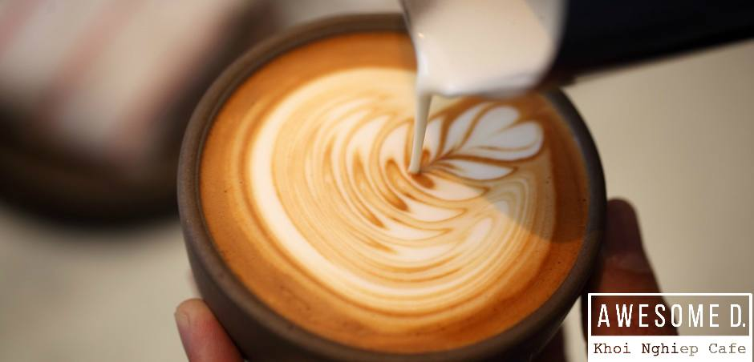 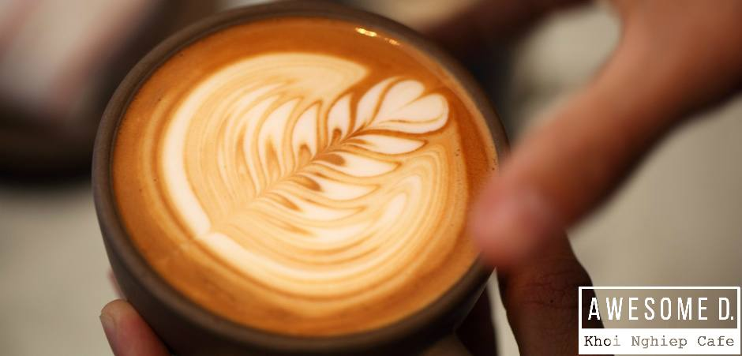Muốn vẽ đẹp là cả một quá trình luyện tập lâu dài và bền bỉ. Sữa chính là cây bút chì của bạn, hãy làm chủ nó. Chúc các bạn thành công !
Nguyễn Thanh Tình - PHP39 (Sưu tầm)